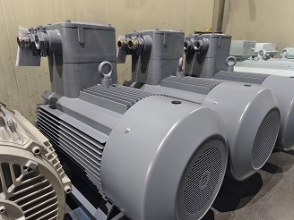
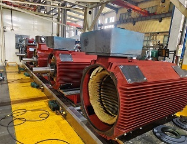
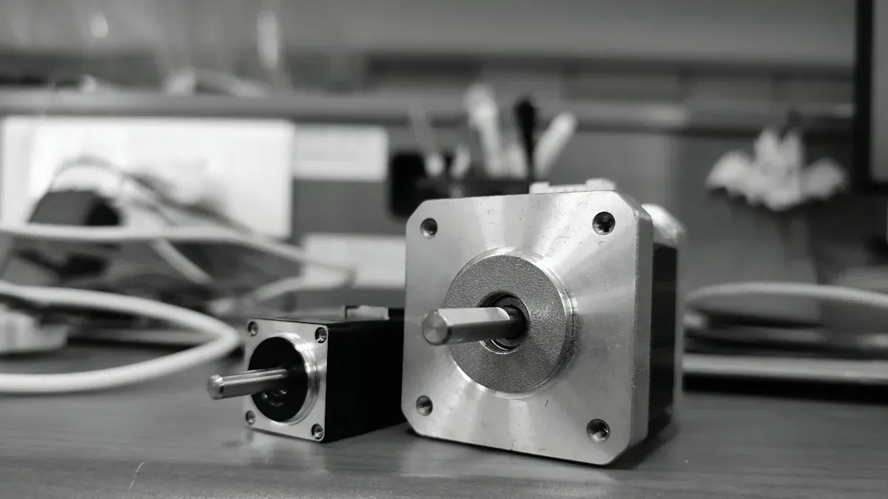

Industrial News

Your Guide to Choosing the Right DC Electric Motor in 2025

Choosing the right DC electric motor is crucial for the success of any project. The motor's specifications directly influence performance and efficiency. For instance, advancements in magnetic materials and thermal management techniques can significantly enhance operational efficiency. In 2025, as technology evolves, understanding these factors becomes even more vital. I encourage you to prioritize informed decisions when selecting a DC electric motor to ensure your project's success.
Key Takeaways
- Understand key motor specs like voltage, speed, and torque to match your project's needs and ensure efficient performance.
- Define your project requirements clearly, including speed, torque, voltage, and size, to select the best motor for your application.
- Consider environmental factors such as dust, temperature, and moisture to choose a motor that lasts longer and works reliably.
- Evaluate the motor's duty cycle and efficiency to prevent overheating, save energy, and reduce operating costs.
- Choose motors compatible with your system and maintenance needs to ensure smooth operation and lower long-term expenses.
Understanding Key DC Electric Motor Specifications
When selecting a DC electric motor, understanding its specifications is essential. These specifications directly impact how well the motor performs in your application. Let's dive into three critical aspects: voltage requirements, speed ratings, and torque characteristics.
Voltage Requirements
Voltage is a fundamental specification that dictates how a DC electric motor operates. In 2025, I find that the most common voltage ranges for DC motors vary significantly based on their applications. For instance, brushless DC motors, often used in electric bikes and scooters, typically operate at voltages up to around 90V. Higher voltage generally means lower current for the same power output, which can enhance efficiency.
Here’s a quick overview of common voltage ranges:
| Voltage Range (V) | Typical Application |
|---|---|
| 90 - 240 | Smaller DC motors, including fractional to a few horsepower ratings |
| 500 - 550 | Larger industrial DC motors |
Choosing the right voltage is crucial. A voltage drop can occur due to internal resistance in the windings and resistance in external circuit elements like cables. This drop can lead to decreased speed and torque, affecting the motor's ability to drive loads, especially during startup. To maintain performance and longevity, I recommend selecting the appropriate voltage and ensuring good connections to minimize resistance.
Speed Ratings
Speed ratings are another vital specification. They determine how fast the motor can operate and influence its suitability for specific applications. For example, DC motors used in robotics and automation typically have low rpm values optimized for precise control. Here’s a table showing standard speed ratings:
| Application Type | No-load Speed (rpm) | Rated Speed (rpm) |
|---|---|---|
| Smart robots (e.g., child escort) | 3.8 | 34 |
| Interactive voice communication robots | 3.8 | 34 |
| Walking robots | 3.8 | 34 |
| Building block robots | 3.8 | 34 |
The speed of a DC motor is governed by the equation N = (V - IaRa) / (keΦ). This means that speed depends on applied voltage and magnetic flux. I appreciate how this relationship allows for straightforward speed control by varying armature voltage. This feature makes DC motors ideal for applications requiring frequent starts, stops, or reversals.
Torque Characteristics
Torque characteristics significantly impact the efficiency and reliability of DC electric motors. The relationship between torque and speed is inverse; as torque increases, speed decreases. This relationship affects power output and energy consumption.
Here’s a comparison of different motor types regarding their torque characteristics:
| Motor Type | Efficiency Range (%) | Torque Ripple Impact | Reliability Aspect |
|---|---|---|---|
| Brushed DC Motors | 75–80 | Higher torque ripple causing more wear | Lower reliability due to brush wear |
| Brushless DC Motors | 85–90 | Lower torque ripple leading to smoother operation | Higher reliability and longer lifespan |
I find that brushless motors tend to have better torque characteristics, leading to higher efficiency and durability. Additionally, gear motors can optimize torque and speed, improving overall efficiency for specific applications.
Step-by-Step DC Electric Motor Selection Guide
Defining Project Requirements
Before selecting a DC electric motor, I always start by defining the project requirements. This step is crucial because it shapes the entire selection process. Here are the key factors I consider:
- Determine the required speed, torque, and voltage for the motor.
- Define the motor voltage based on the power source, such as 12V or 24V DC.
- Understand the rated (on-load) speed and maximum speed needed for your application.
- Specify rated torque and stall (peak) torque requirements.
- Consider the relationship between torque and speed using motor performance curves.
- Balance motor size against performance needs, acknowledging that larger motors generally provide more power but may face space constraints.
- Evaluate the potential need for gear motors to increase torque while reducing speed, considering different gear types like spur, planetary, or worm.
By clearly defining these requirements, I ensure that the selected motor aligns perfectly with the project's goals. For instance, if I need high precision in a robotics application, I might lean towards stepper motors for their accuracy.
Considering Environmental Conditions
Next, I assess the environmental conditions where the motor will operate. Environmental factors can significantly impact the performance and longevity of a DC electric motor. Here are some aspects I always keep in mind:
- Particle ingress (dust): Dust can enter the motor, causing contamination and wear, which reduces motor life and efficiency.
- Temperature extremes: Operating beyond the rated temperature can halve the motor's lifespan. For example, a rise from 25°C to 125°C increases winding resistance and decreases torque.
- Moisture: Moisture ingress can lead to corrosion and electrical failures, which I always try to avoid.
- Corrosive environments: Corrosive agents can degrade motor components, affecting reliability and performance.
- IP ratings: I select motors based on their IP ratings to ensure they can withstand dust and water exposure.
Understanding these factors helps me choose a motor that can endure the specific conditions of its application. For example, if I know the motor will be exposed to moisture, I opt for one with a higher IP rating to ensure durability.
Evaluating Size and Form Factor
Finally, I evaluate the size and form factor of the DC electric motor. The physical dimensions and mounting options are critical, especially for compact devices. Here’s what I consider:
- The physical size and mounting options of DC motors must fit within the limited space of compact devices.
- Small DC gear motors combine integrated gearboxes to deliver high torque at reduced speeds while maintaining a small footprint, making them ideal for robotics and consumer electronics.
- Customization options, such as gear ratios and shaft configurations, allow me to tailor the motor to specific application needs, enhancing integration and performance.
- Compact planetary gearboxes integrated with DC motors provide precise speed control and high torque in space-constrained environments.
By focusing on these aspects, I can ensure that the selected motor not only meets performance requirements but also fits seamlessly into the design of the device. For instance, frameless motors, which consist only of the rotor and stator, allow for direct integration into the machine structure, reducing weight and size.
Assessing Duty Cycle
When I assess the duty cycle of a DC electric motor, I consider how long the motor can operate at its rated power without overheating. The duty cycle is expressed as a ratio of operating time to total cycle time. Here are some key points I always keep in mind:
-
Continuous Duty (S1): This means the motor runs at a constant load until it reaches thermal equilibrium. It’s perfect for applications that require steady, uninterrupted operation, such as escalators or packaging machinery.
-
Short-Time Duty (S2): In this case, the motor operates at a constant load for a limited time without reaching thermal equilibrium. After this period, it needs a rest to cool down.
-
Periodic Duty (S3-S8): These motors operate with cycles that include starting, braking, and varying loads without reaching thermal equilibrium. They are ideal for machines with rapidly changing load demands, like elevators or metalworking machinery.
Understanding the duty cycle is crucial for selecting motors that meet the thermal and operational demands of industrial automation applications. For instance, if I choose a motor with a 50% duty cycle, it can run for 30 minutes but then needs to rest for another 30 minutes to cool down. Exceeding the recommended duty cycle can lead to overheating and damage, which I always strive to avoid.
I also consider factors that affect the duty cycle, such as load magnitude and the operating environment's temperature. These elements influence heat dissipation and motor efficiency. By matching the motor's duty cycle rating to the application's load and rest patterns, I ensure safe and reliable operation, extending the motor's service life. Techniques like pulse width modulation (PWM) help manage power delivery and thermal load, improving performance under varying duty cycles.
Factoring in Efficiency
Efficiency is another critical aspect I evaluate when selecting a DC electric motor. In 2025, the efficiency ratings for DC motors have become more significant than ever. Brushless DC motors (BLDC) typically achieve optimal efficiency ratings between 85% and 90%. In contrast, brushed DC motors lag behind, with efficiencies around 75% to 80%. Synchronous motors, including switched reluctance motors (SRMs), can even reach efficiencies up to 99%, making them the most efficient option available.
The June 2023 Direct Final Rule established consensus-recommended efficiency levels for electric motors, including brushless DC motors. These standards promote higher efficiency levels, supporting the target efficiency range of approximately 85% to 90% for brushless DC motors in 2025. This aligns with industry and regulatory expectations, making it essential for me to consider these ratings when selecting a motor.
Energy-efficient motors consume less electricity than conventional motors, leading to significant cost savings over their lifecycle. In energy-intensive industries like manufacturing and HVAC, the impact of efficiency becomes even more pronounced. For example, electric motors account for about 70% of industrial electricity consumption. By targeting motors for efficiency, I can achieve large energy savings.
Incorporating technologies like variable speed drives (VSDs) or inverters can reduce power consumption by 25% to 60%. This results in a significant reduction in energy use and costs. Additionally, regulatory standards, such as the U.S. Department of Energy's efficiency requirements, mandate the use of high-efficiency motors, driving widespread adoption. These motors often incorporate advanced materials and components, such as rare-earth magnets, to reduce energy losses and improve performance.
Key Factors to Consider During DC Electric Motor Selection
Compatibility with Other Components
When I select a DC electric motor, ensuring compatibility with other components is vital. I always match the motor's voltage rating with the available power supply. This step prevents inefficiencies or potential damage. Here are some additional factors I consider:
- Ensure the torque and speed ratings align with the application's load requirements.
- Integrate the motor with compatible control systems for precise speed and torque control.
- Confirm mechanical compatibility, including size and mounting configurations.
I also pay attention to electromagnetic interference (EMI) issues. Sparks from commutators in brushed motors can create noise that disrupts control circuits. To avoid these problems, I use proper shielding and filtering techniques. Regular testing of the motor-controller setup under various loads helps confirm smooth operation.
Maintenance Needs
Maintenance needs vary significantly between brushed and brushless DC electric motors. Brushed motors require regular inspection and replacement of brushes and commutators due to wear. In contrast, brushless motors have minimal maintenance requirements. They mainly need bearing care, which leads to longer lifespans.
| Aspect | Brushed DC Motors | Brushless DC Motors |
|---|---|---|
| Maintenance Needs | Regular inspection and replacement of brushes and commutators due to wear | Minimal maintenance, mainly bearing upkeep; no brushes or commutators to replace |
| Service Life | Typically 1,000 to 8,000 hours before significant maintenance | Can operate from 10,000 up to 100,000 hours with minimal maintenance |
This difference in maintenance frequency significantly impacts the total cost of ownership. Fewer maintenance needs mean lower costs and reduced downtime. I always consider these factors when making my selection.
Expected Lifetime and Reliability
Reliability ratings for DC electric motors can be tricky to compare across manufacturers. Each manufacturer may use different testing methods and terms, making it hard to assess reliability objectively. I often look for well-known brands like Maxon and Faulhaber, which have established reputations for reliability.
I also consider application-specific needs, efficiency, and technical support when evaluating reliability. Communication with manufacturers helps me make informed decisions. By focusing on these aspects, I ensure that the selected motor meets my project's demands for longevity and performance.
Common Applications of DC Electric Motors

Robotics
In my experience, DC electric motors play a pivotal role in robotics. They provide the necessary power for various robotic applications. Here are some common uses:
- Robotic Arms: These motors enable precise lifting, turning, and grasping of objects.
- Autonomous Vehicles: They power warehouse robots and drones, ensuring reliable movement.
- Humanoid Robots: DC motors drive joints and limbs, allowing for lifelike motions.
- Pick-and-Place Machines: They facilitate quick and accurate positioning of items.
I appreciate how DC motors offer high starting and sustained torque, which is essential for providing sufficient force. Their ability to deliver smooth and consistent motion makes them ideal for tasks requiring precision. The compact size of these motors also allows for integration into tight spaces, enhancing their versatility in robotic designs.
Automotive
Advancements in DC electric motor technology have transformed the automotive industry. I’ve seen how these motors contribute to the rapid growth of electric vehicles (EVs). They improve energy efficiency, reduce emissions, and lower maintenance costs compared to traditional internal combustion engines. Here are some key benefits:
- Longer Driving Ranges: DC motors enhance the overall performance of EVs.
- Quieter Operation: They provide a more pleasant driving experience.
- Fewer Moving Parts: This design leads to increased reliability and reduced repair expenses.
Major automakers are investing heavily in this technology. The integration of DC motors with battery management systems optimizes electrical flow and extends battery life. This innovation supports the sustainability goals of the automotive sector.
Consumer Electronics
DC electric motors are integral to modern consumer electronics. They enable precise control and efficiency across various devices. Here’s a look at their roles:
| Consumer Electronics Category | Role of DC Electric Motors | Key Benefits |
|---|---|---|
| Household Appliances | Power small kitchen devices | High efficiency and space-saving |
| Computer Equipment | Drive printers and fans | Precise movement control and durability |
| Entertainment Devices | Enable movement in drones | High torque and reliability |
| Cameras | Adjust focus and zoom | Smooth operation and noise reduction |
| Wearable Technology | Provide haptic feedback | Efficient notifications via vibrations |
I find that brushless DC motors are especially valued for their reliability and low maintenance. This reliability supports ongoing innovation in consumer electronics, meeting evolving demands.
Industrial Automation
In my experience, DC electric motors are essential in industrial automation. They power various machines and systems, enhancing efficiency and productivity. I’ve seen firsthand how these motors drive conveyor belts, robotic arms, and assembly lines. Their reliability and performance make them a top choice for many applications.
One significant advantage of using DC electric motors in industrial settings is their precise control. I appreciate how I can easily adjust their speed and torque to meet specific requirements. This flexibility allows for smooth operation, even in complex tasks. For example, when I work on automated packaging systems, I rely on DC motors to ensure accurate positioning and timing.
Here are some common applications of DC electric motors in industrial automation:
- Conveyor Systems: They transport materials efficiently across production lines.
- Robotic Systems: DC motors provide the necessary movement for robotic arms and automated guided vehicles (AGVs).
- CNC Machines: They enable precise cutting and shaping of materials in manufacturing processes.
- Packaging Equipment: DC motors ensure accurate filling, sealing, and labeling of products.
Tip: When selecting a DC electric motor for industrial automation, consider factors like load requirements, duty cycle, and environmental conditions. These elements will help you choose the right motor for your specific application.
I also find that the maintenance needs of DC electric motors are relatively low compared to other motor types. This aspect is crucial in industrial settings, where downtime can be costly. By choosing a reliable DC motor, I can minimize maintenance and keep operations running smoothly.
In summary, selecting the right DC electric motor is essential for project success. I highlighted key specifications like voltage, speed, and torque, which directly impact performance. I also discussed the importance of understanding project requirements, environmental conditions, and duty cycles.
I encourage you to apply this knowledge to your specific projects. Informed motor selection can prevent issues like decreased efficiency and poor performance. Remember, choosing the right motor brand and vendor is crucial for long-term success.
Tip: Always consider the unique needs of your application. This approach will help you achieve optimal performance and reliability.